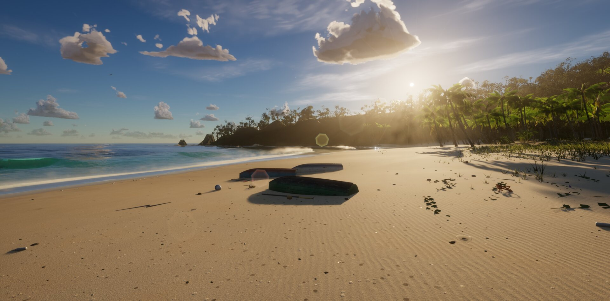
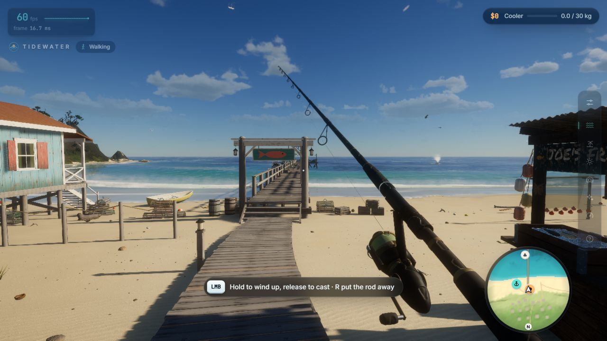

HELLO, HUMAN! CASE STUDY 01
AI와 만든 낚시 게임,
놀라운 것은 그래픽만이 아니다
Tidewater로 살펴보는 엔진 전환, 반복 개선,
그리고 검증 가능한 AI 개발

브라우저 안에 바다가 펼쳐집니다. 해변을 걷고, 배를 타고, 낚싯줄을 던질 수 있습니다. 물고기를 잡으면 상인에게 팔고, 그 돈으로 낚시 장비와 보트를 개선합니다. 수면 아래로 들어가면 산호초와 물고기가 보이고, 바다에서는 혹등고래가 모습을 드러냅니다. 브라우저 낚시 게임 Tidewater의 세계입니다.
이런 결과물을 보면 먼저 그래픽에 눈이 갑니다. 그다음에는 질문이 생깁니다.
“AI와 함께 어디까지 만든 걸까?”
제작자는 X 게시물에서 해안 데모를 낚시 게임으로 발전시키면서 Claude Opus 5.5를 활용했다고 설명했습니다. 공개된 변경 기록에도 해당 모델의 공동 작성 표기와 함께 기능 개선, 성능 최적화, 시각적 오류 수정 과정이 남아 있습니다.
하지만 이 사례를 “AI가 멋진 게임을 만들었다”는 이야기로만 읽으면 중요한 부분을 놓칩니다. 더 흥미로운 것은 이미 만들어진 세계를 유지하면서 내부 엔진을 바꾸고, 게임의 규칙을 추가하고, 결과를 비교하며 계속 다듬었다는 점입니다.
헬로우 휴먼의 첫 사례연구는 이 과정을 살펴봅니다. 무엇이 구현됐고, 어떤 방식으로 개선했으며, 우리 실험에는 무엇을 가져올 수 있을까요?
바다를 구경하는 데모에서 규칙이 있는 낚시 게임으로.
기존 모습과 동작을 유지하며 자체 엔진으로 옮기기.
게임 규칙과 화면을 서로 다른 방법으로 확인하기.
보기 좋은 바다보다 중요한 것, 서로 연결된 세계
Tidewater의 바다는 하나의 물결 효과로 구성되지 않습니다. 서로 다른 크기의 파도를 합성하는 FFT 기반 해양 표현, 수심에 따라 부서지는 파도, 모래 위로 밀려왔다 빠져나가는 얕은 물, 거품과 물보라가 함께 사용됩니다. 여기에 수면 굴절과 수중 빛무늬, 구름 그림자, 파도에 맞춘 위치 기반 음향이 더해집니다.
기술 이름을 모두 외울 필요는 없습니다. 중요한 것은 각 기술이 맡은 역할입니다.
먼바다의 큰 움직임만 표현하면 해안이 어색해질 수 있습니다. 해안의 물결만 정교하면 바다가 반복되는 무늬처럼 느껴질 수 있습니다. 물과 빛이 그럴듯해도, 주변 사물과 소리가 따로 움직이면 하나의 장소라는 인상이 약해집니다.
이 프로젝트는 그 사이를 채우려 합니다. 물이 해변에 닿는 경계, 수면 위와 아래의 차이, 햇빛과 구름의 관계까지 연결하는 방식입니다.
상점과 주변 소품도 같은 방향입니다. 낡은 목재와 벗겨진 표면, 골판 금속과 생활 도구에는 외부의 스캔 모델과 텍스처가 사용됐습니다. 단순한 도형으로 상점의 위치만 표시하는 대신, 사람이 머무는 공간의 흔적을 더한 것입니다.
여기서 읽을 수 있는 첫 번째 교훈은 이렇습니다.
완성도는 기능의 개수만으로 결정되지 않습니다. 기능과 기능이 만나는 곳을 얼마나 잘 다듬었는지도 중요합니다.
물고기 한 마리를 더 추가하는 것과, 물이 모래에 닿는 경계를 자연스럽게 만드는 것은 서로 다른 종류의 개선입니다. Tidewater의 개발 기록에는 후자에 해당하는 작업도 남아 있습니다.

확인 자료 · 프로젝트 기능 설명 ↗
풍경 데모가 게임이 되는 순간
Tidewater에는 낚시 장소와 수심, 시간대에 따라 달라지는 입질이 있습니다. 등장하는 물고기는 18종이며, 물고기가 걸리면 낚싯줄의 장력을 조절해야 합니다. 잡은 물고기는 보관하거나 판매할 수 있고, 수익으로 낚싯줄·릴·낚싯대·보관함·보트 장비 등을 개선합니다. 진행 상황은 브라우저에 저장됩니다.
이 구조를 한 문장으로 줄이면 다음과 같습니다.
- 01낚시 장소 선택수심·서식 구역·시간대
- 02물고기와 힘겨루기입질을 보고 장력 조절
- 03어획물 판매Joe에게 판매해 수익 획득
- 04장비 개선Marta에게 장비·보트 업그레이드
풍경을 구경하는 데모와 게임의 차이는 여기에 있습니다. 사용자의 행동이 결과를 만들고, 그 결과가 다음 행동의 이유가 됩니다.
더 좋은 장비가 단순히 이름만 바뀌는 아이템이라면 성장의 의미가 약해집니다. 반대로 장비가 실제 낚시 결과에 영향을 준다면, 판매와 구매가 플레이의 일부가 됩니다.
공개된 게임 로직 테스트에도 이 관계가 반영돼 있습니다. 기본 장비로 잡기 어려운 큰 물고기를 개선된 장비로 잡을 수 있는지, 무작정 릴을 감으면 줄이 끊어지는지, 조심스럽게 조작하면 작은 물고기를 잡을 수 있는지 등을 검사하도록 작성돼 있습니다.
즉, 화면에 낚싯대와 상점이 등장한다는 사실보다 중요한 것은 그 요소들이 하나의 규칙으로 연결돼 있다는 점입니다.
물론 이것만으로 장기적인 재미나 상용 게임의 경제 밸런스까지 검증됐다고 할 수는 없습니다. 다만 보기 좋은 장면에 버튼을 붙인 수준을 넘어, 플레이가 이어지는 구조를 만들려 했다는 것은 확인할 수 있습니다.

확인 자료 · 게임 설명 ↗ · 게임 규칙 테스트 ↗
더 큰 변화는 화면 뒤의 엔진 교체
이 사례에서 기술적으로 주목할 변화는 Three.js와 TSL 기반 구현을 자체 WebGPU·WGSL 엔진으로 옮긴 작업입니다. 포팅 문서는 기존 구현과 같은 모습과 동작을 유지하면서, 프로젝트 소스에서 Three.js 의존성을 제거하는 것을 목표로 명시합니다.
여기서 한 가지를 구분해야 합니다.
Three.js에서 자체 WebGPU 엔진으로 바꿨다는 말은, 단순히 WebGL에서 WebGPU로 바꿨다는 뜻이 아닙니다. Three.js 자체에도 WebGPU를 사용하는 렌더러가 있습니다. 따라서 핵심은 GPU를 쓰기 시작했다는 것이 아니라, 기존 라이브러리가 관리하던 부분을 프로젝트가 직접 관리하도록 바꿨다는 데 있습니다.
실제 GPU.js에서는 GPU 어댑터와 장치를 요청하고, 화면에 사용할 WebGPU 컨텍스트를 구성합니다. 포팅 문서에는 재질, 그림자, GPU 자원, 셰이더 모듈, 캐릭터 애니메이션 등을 자체 엔진으로 대응시키는 방법이 정리돼 있습니다.
제작자는 이 선택을 AI에 더 많은 제어권을 주기 위한 것이라고 설명했습니다. 이를 개발 관점에서 해석하면, AI가 수정할 수 있는 범위를 게임 기능에서 렌더링 내부까지 넓힌 것에 가깝습니다.
물 표현이 너무 비싸거나 특정 장면이 어색하다면, 상위 설정만 바꾸는 대신 물을 그리는 코드와 자원 처리 방식까지 수정할 수 있게 됩니다.
그렇다고 결론이 “AI가 있으니 라이브러리를 모두 없애자”는 것은 아닙니다. 직접 관리하는 범위가 넓어지면 유지보수와 호환성도 그만큼 책임져야 합니다. 실제 Tidewater의 GPU 초기화 코드는 WebGPU나 적절한 어댑터가 없으면 오류를 발생시킵니다.
이 사례가 던지는 질문은 좀 더 구체적입니다.
“특정 목적에 맞는 내부 구조를 직접 만들고 개선하는 작업을, AI와 함께 어디까지 감당할 수 있을까?”
Tidewater는 그 질문을 실제 프로젝트에서 시도한 사례입니다.
- 01기준 구현Three.js / TSL
- 02유지할 결과같은 모습과 동작
- 03자체 엔진WebGPU / WGSL
- 04직접 관리자원·셰이더·그리기 순서
확인 자료 · 엔진 포팅 문서 ↗ · GPU 초기화 코드 ↗ · Three.js 공식 문서 ↗
AI에게 자유를 주기 전에, 지킬 기준을 만들었다
엔진 교체보다 더 눈여겨볼 부분이 있습니다. 무엇을 바꿔도 되고, 무엇은 유지해야 하는지 문서로 정했다는 점입니다.
docs/PORTING.md에는 기존 파일을 먼저 읽고, 구조와 이름·상수 등을 유지하면서 옮기도록 지시합니다. 구현을 쉽게 만들기 위해 효과를 생략해서는 안 되며, 그대로 옮기지 못하는 부분은 이유를 남기도록 합니다. 시스템 간 인터페이스와 함수 이름을 맞추고, 결과 이미지를 출력해 기준 구현과 비교하도록 하는 내용도 있습니다.
이는 “똑같이 다시 만들어 줘”보다 훨씬 구체적인 작업 기준입니다.
| 포팅 문서의 기준 | 개발 과정에서 갖는 의미 |
|---|---|
| 기존 구현을 기준으로 삼습니다. | 무엇을 유지해야 하는지 판단할 출발점이 있습니다. |
| 효과를 임의로 생략하지 않습니다. | 실행에 성공했다는 이유로 기능 축소를 숨기지 못하게 합니다. |
| 인터페이스와 이름을 맞춥니다. | 여러 부분을 따로 수정해도 다시 연결할 기준이 있습니다. |
| 이전 결과와 비교합니다. | 바뀐 결과가 개선인지, 회귀인지 살펴볼 수 있습니다. |
이 기준을 바탕으로 읽으면, 개발 과정은 다음과 같이 정리할 수 있습니다.
- 01기준 정의유지할 기능과 표현 명시
- 02구현 변경엔진·규칙·효과 수정
- 03같은 조건으로 확인고정 시점·입력으로 비교
- 04차이 수정개선과 회귀를 구분
실제 변경 기록에는 얕은 물 아래의 모래가 서로 다른 렌더링 결과 사이에서 끊겨, 해변에 직선처럼 보이는 문제가 등장합니다. 해당 커밋은 모래 이미지를 선택하는 방식을 수정하고, 지정된 시점에서 선이 사라졌는지와 다른 장면이 유지되는지를 확인했다고 기록합니다.
이런 기록이 중요한 이유는 단순합니다.
AI가 수정한 뒤 화면이 달라졌다는 사실만으로는 충분하지 않습니다. 문제가 해결됐는지, 그 과정에서 다른 부분을 망가뜨리지는 않았는지 확인해야 합니다.
게임 규칙도 마찬가지입니다. 테스트에는 마른 모래에서 입질이 발생하지 않는지, 심해에서 해당 구역의 어종이 나오는지, 판매 대금과 보관함이 함께 갱신되는지, 저장한 진행 상황을 복원할 수 있는지 등이 포함돼 있습니다.
이 글에서 해당 테스트를 직접 실행한 것은 아닙니다. 따라서 테스트 파일의 존재와 전체 품질 검증 완료를 같은 뜻으로 취급해서는 안 됩니다. 다만 눈으로 확인할 문제와 규칙으로 검사할 문제를 나눠 다루는 구조는 살펴볼 수 있습니다.
확인 자료 · 포팅 기준 ↗ · 얕은 물 표현 수정 기록 ↗ · 엔진 스모크 테스트 ↗
성능 최적화로 확보한 시간을 다시 디테일에 쓰다
제작자는 게시물 원문에서 최적화로 성능을 60FPS에서 100FPS까지 높였지만, 새로운 기능을 추가하면서 확보한 여유의 상당 부분을 다시 사용했다고 설명했습니다.
같은 조건에서 측정했다는 전제라면, 이를 프레임 시간으로 바꿔 생각할 수 있습니다. 60FPS는 한 화면당 약 16.7밀리초, 100FPS는 약 10밀리초입니다. 약 6.7밀리초의 처리 시간을 확보한 셈입니다.
그 여유를 새로운 효과와 디테일에 사용했다는 이야기입니다.
공개 변경 기록에는 구체적인 최적화 작업도 있습니다. GPU 파이프라인을 비동기로 준비하고, 화면 밖 오브젝트까지 사전에 준비하며, 반복 사용하는 GPU 자원을 캐시하는 방식입니다. 물에 가려지는 해저는 더 저렴하게 처리하고, 일부 수중 효과는 낮은 해상도로 계산하도록 바꿨습니다.
평균 FPS뿐 아니라 로딩과 순간 멈춤도 다뤘습니다. 제작자 측 커밋에 기록된 수치는 다음과 같습니다.
| 항목 | 최적화 전 | 최적화 후 |
|---|---|---|
| 캐시가 없는 첫 로딩 | 36.5초 | 10.3초 |
| 가장 긴 페이지 멈춤 | 13.7초 | 0.8초 |
이 수치는 특정 테스트에서 작성된 제작자 기록이며, 모든 기기에서 같은 결과가 나온다는 뜻은 아닙니다.
따라서 이 사례에서 가져갈 교훈은 “WebGPU를 쓰면 100FPS가 된다”가 아닙니다.
기능을 추가하는 능력과, 추가한 기능의 비용을 줄이는 능력을 함께 봐야 한다는 것입니다.
원하는 효과를 계속 더하기만 하면 끝나는 작업이 아닙니다. 어디에서 비용이 발생하는지 확인하고, 덜 중요한 계산을 줄이거나 반복 작업을 재사용해야 합니다. Tidewater의 최적화 기록은 그런 개선이 실제 개발 과정에 포함됐음을 보여줍니다.
확인 자료 · 최적화 변경 기록 ↗
‘AI가 만들었다’는 말에 포함된 사람과 재료
이 게임의 모든 모델과 소리, 그래픽 기법을 AI가 처음부터 새로 만든 것은 아닙니다.
출처 문서에 따르면 환경 소품과 텍스처에는 Poly Haven 자료가, 상인 캐릭터와 애니메이션에는 Microsoft Rocketbox 자료가 사용됐습니다. 음향에는 Freesound의 현장 녹음이 활용됐습니다. 고래는 자체 스크립트로 생성한 절차적 모델이며, 구름 구현에는 제작자 측의 기존 Sky Pro WebGPU 작업을 활용한 부분이 있습니다.
이는 성과를 깎아내릴 이유가 아닙니다. 대신 성과가 어디에 있는지 정확하게 짚어야 합니다.
이 사례의 가치는 모든 재료를 무에서 만들었다는 데 있지 않습니다. 기존 기술과 에셋을 선택하고, 게임 규칙과 연결하고, 엔진을 바꾼 뒤에도 결과물을 계속 개선한 데 있습니다.
따라서 “AI가 혼자 만든 게임”보다는 제작자의 방향 설정과 기존 자산, AI 보조 구현, 반복적인 확인이 결합된 프로젝트로 읽는 편이 정확합니다.
제작자는 이번 프로젝트에서 모델의 한계를 찾지 못했다고도 설명했습니다. 그러나 공개된 자료만으로 전체 프롬프트, 실패한 시도, 사람의 수정량, 총비용을 파악할 수는 없습니다. 커밋의 공동 작성 표기만으로 각 주체의 기여 비율을 계산할 수도 없습니다.
확인할 수 있는 것은 복합적인 게임 프로젝트에 AI가 활용됐고, 그 결과물과 개선 기록이 공개돼 있다는 사실입니다. 이것을 모든 개발자와 모든 프로젝트에서 같은 성과가 보장된다는 주장으로 확장할 필요는 없습니다.
놀라움을 유지하면서도, 그 놀라움의 근거와 범위를 구분하는 것. 그것이 이 사례를 제대로 참고하는 방법입니다.
공개 자료로 확인한 것
플레이 가능한 게임, 자체 엔진 코드, 포팅 지침, 규칙 테스트 파일과 AI 공동 작성 표기가 있는 개선 기록.
이 사례만으로 알 수 없는 것
전체 프롬프트, 실패한 시도, 사람의 수정 비율, 총비용, 모델 간 우열과 장기 운영 품질.
확인 자료 · 에셋·기술 출처 ↗ · AI 공동 작성 표기가 있는 변경 기록 ↗
우리 실험에 가져갈 것
Tidewater에 사용된 WebGPU 같은 기술을 우리 시스템에 억지로 적용할 필요는 없습니다.
헬로우 휴먼이 가져갈 만한 것은 AI에게 변경을 맡길 수 있도록 작업을 구성하는 방식입니다.
첫째, 바꿀 것보다 먼저 유지할 것을 정합니다.
기존 기능, 화면의 중요한 동작, 입력과 출력, 지켜야 할 규칙을 적어둡니다. “더 좋게 만들어 줘”보다 “이 동작은 유지하면서 이 부분을 개선해 줘”가 결과를 판단하기 쉽습니다.
둘째, 다시 확인할 수 있는 조건을 만듭니다.
같은 입력 데이터와 실행 절차, 같은 화면 상태를 준비합니다. 결과가 달라졌을 때, AI의 수정 때문인지 테스트 조건이 달라졌기 때문인지 구분할 수 있어야 합니다.
셋째, 코드 생성 시간보다 수정과 검증까지의 시간을 기록합니다.
초안이 빨리 나와도 사람이 오래 고쳐야 한다면 전체 작업은 빨라지지 않을 수 있습니다. AI 실행 시간뿐 아니라 테스트 실패, 재작업, 사람의 검토 시간도 실험 결과에 포함하는 편이 좋습니다.
헬로우 휴먼의 LLM 활용 가이드에서 다룬 기준도 같습니다. 모델 하나가 아니라, 도구와 문맥, 테스트 환경, 검증 방식의 조합으로 성과를 살펴보자는 것입니다.
첫 실험은 작게 시작할 수 있습니다. 이미 동작하는 프로그램에서 기능 하나를 개선하고, 기존 동작이 유지되는지 확인해보는 것입니다. 성공했다면 결과뿐 아니라 어떤 기준과 검증 장치가 도움이 됐는지 함께 남깁니다. 실패했다면 어디에서 사람의 개입이 필요했는지 기록합니다.
그 기록이 다음 실험의 출발점이 됩니다.
확인 자료 · 함께 읽기: 우리 일을 끝내는 LLM을 고르는 법 ↗
낚싯대보다 눈여겨볼 것
Tidewater에서 먼저 보이는 것은 바다와 낚싯대입니다. 그러나 이 사례연구에서 더 오래 살펴볼 것은 그 뒤의 개발 과정입니다.
엔진을 바꾸되 기존 결과를 유지하는 일. 게임 규칙을 추가하면서 서로 맞물리게 하는 일. 처리 비용을 줄이고, 작은 시각적 오류를 찾아 다시 고치는 일. 공개 문서와 변경 기록에는 그런 작업이 담겨 있습니다.
이 사례를 통해 AI 개발을 평가하는 질문도 조금 바꿔볼 수 있습니다.
“처음에 얼마나 그럴듯한 결과를 만들었는가?”에서 한 걸음 더 나아가, “이미 복잡해진 결과물을 얼마나 꾸준히 이해하고, 수정하고, 검증할 수 있는가?”를 묻는 것입니다.
헬로우 휴먼이 이 낚시 게임에서 가져갈 것은 정답이 아니라, 다음 실험을 설계하는 기준입니다.
AI에게 더 많은 일을 맡기고 싶다면, 더 많은 코드를 쓰게 하는 것만큼 결과를 확인할 수 있는 구조를 만드는 일도 중요합니다.
자료와 읽는 법
프로젝트 파일은 확인 당시 커밋 4811ba4에 연결했습니다. 게임 사이트는 계속 바뀔 수 있습니다. 구현에 대한 사실은 공개 문서·코드, 성능은 제작자 기록, 실험 제안과 평가는 헬로우 휴먼의 해석입니다.
- 제작자 게시물 원문과 게임 영상 (X) ↗
- Tidewater 소개와 실행 조건 ↗
- Three.js / TSL → WebGPU / WGSL 포팅 지침 ↗
- 게임 규칙 테스트 ↗
- 사용한 에셋·기술과 라이선스 ↗
- 성능 최적화 기록 ↗
마을·낚싯대 화면은 게임 사이트에서 직접 캡처했고, 해변 이미지는 제작자의 공개 저장소에서 가져왔습니다. 각 이미지에 원작과 출처를 표기했습니다.
AI 사례연구 목록으로 돌아가기